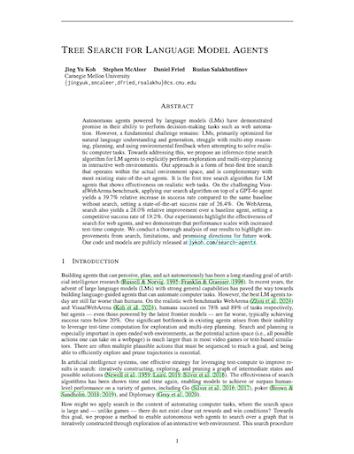

Tree Search for Language Model Agents
Autonomous agents powered by language models (LMs) have demonstrated promise in their ability to perform decision-making tasks such as web automation. However, a fundamental challenge remains: LMs, primarily optimized for natural language understanding and generation, struggle with multi-step reasoning, planning, and using environmental feedback when attempting to solve realistic computer tasks. Towards addressing this, we propose an inference-time search algorithm for LM agents to explicitly perform exploration and multi-step planning in interactive web environments. Our approach is a form of best-first tree search that operates within the actual environment space, and is complementary with most existing state-of-the-art agents. It is the first tree search algorithm for LM agents that shows effectiveness on realistic web tasks. On the challenging VisualWebArena benchmark, applying our search algorithm on top of a GPT-4o agent yields a 39.7% relative increase in success rate compared to the same baseline without search, setting a state-of-the-art success rate of 26.4%. On WebArena, search also yields a 28.0% relative improvement over a baseline agent, setting a competitive success rate of 19.2%. Our experiments highlight the effectiveness of search for web agents, and we demonstrate that performance scales with increased test-time compute. We conduct a thorough analysis of our results to highlight improvements from search, limitations, and promising directions for future work.
Method

Our proposed search algorithm is a best-first search method loosely inspired by A* search~\citep{hart1968formal}, a classic graph traversal algorithm used widely in computer science. We use a language model agent to propose candidate branches of the search tree. The search has hyperparameters depth \(d\), branching factor \(b\), and search budget \(c\) which determine the maximum size of the search tree, and termination probability threshold \(\theta\). We describe the procedure in detail in the following paragraphs and provide the formal algorithm in the appendix of the paper. At time \(t\) in the execution trajectory, the agent has previously executed a sequence of actions to arrive at the current state \(s_t\). We begin the search algorithm from \(s_t\) by initializing the frontier \(\mathcal{F} \leftarrow \{ \}\) (implemented as a max priority queue) which holds the set of states that we plan to evaluate, the best state found so far \(\hat{s}_t \leftarrow s_t\), the score of the best sequence \(\hat{v}_t \leftarrow 0\), and the search counter \(s \leftarrow 0\). At each iteration of the search process, we extract the next item from the frontier, \(s_p \leftarrow \text{pop}(\mathcal{F})\). We use the value function to compute the score for state \(s_p\) (with observation \(o_p\) and previous observations \(o_1, \ldots, o_{p-1}\)): \[ v_p = f_v(I, \{ o_1, \ldots, o_p \}) \] Then, we increment the search counter \(s\), and if \(v_p\) is higher than the current best score \(\hat{v}_t\), we update it and our best state accordingly: \[ s \leftarrow s + 1 \\ \hat{s}_t \leftarrow \begin{cases} s_p & \text{if } v_p > \hat{v}_t \\ \hat{s}_t & \text{otherwise} \end{cases} \\ \hat{v}_t \leftarrow \max(\hat{v}_t, v_p) \] If \(v_p \geq \theta\) (the agent is likely to have found a goal state) or \(s \geq c\) (the search budget has been exceeded), we will terminate the search and navigate to the best state \(\hat{s}_t\) found thus far. Otherwise, if the current branch does not exceed the maximum depth (i.e., \(| (s_0, \ldots, s_{p}) | < d\)), we will generate plausible next actions for branching by obtaining \(b\) candidate actions \(\{ a_{p}^1, \ldots, a_{p}^b \}\) from the language model agent \(f_{\phi}\). For each \(i\), we execute \(a_p^i\) and add the resulting state \(s_{p}^i\) to the frontier with the score of the current state: \[ \mathcal{F} \leftarrow \mathcal{F} \cup (v_p, s_p^i) \qquad \text{ for } i = 1, \ldots, b \] This concludes one iteration of search. If both of the termination conditions have not been reached, we backtrack and repeat this process for the next best state from the updated frontier \(\mathcal{F}\).
Results
| Benchmark | Agent Model | Max Actions | No Search | + Search | Relative Change |
|---|---|---|---|---|---|
| VisualWebArena | GPT-4o + SoM [1] | 30 | 19.8% | - | - |
| Llama-3-70B-Instruct [1] | 9.8% | - | - | ||
| Llama-3-70B-Instruct (ours) | 5 | 7.6% | 16.7% | +119.7% | |
| GPT-4o + SoM (ours) | 18.9% | 26.4% | +39.7% | ||
| WebArena | GPT-4o [2] | 30 | 13.1% | - | - |
| GPT-4 + Reflexion [3] | 15.6% | - | - | ||
| AutoWebGLM [4] | 18.2% | - | - | ||
| AutoEval [3] | 20.2% | - | - | ||
| BrowserGym (GPT-4) [5] | 20.2% | - | - | ||
| SteP [6] | 35.8% | - | - | ||
| GPT-4o (ours) | 5 | 15.0% | 19.2% | +28.0% |
Success rates (SR) and relative change (Δ) for baseline models and models that employ search on the VisualWebArena [1] and WebArena [2] benchmarks. We also show other published approaches. Search substantially improves our baseline models, setting a new state-of-the-art on VisualWebArena.
Our results are summarized in the table above. Introducing search increases success rate substantially across the board. Search improves the success rate of the baseline GPT-4o + SoM agent on VWA by 39.7\% relatively (increasing from \(18.6\%\) to \(26.4\%\)), setting a new state-of-the-art on the benchmark. On WA, introducing search to the GPT-4o agent improves the success rate substantially as well, increasing it by \(28.0\%\) relatively (\(15.0\%\) to \(19.2\%\)). This is competitive with several other prompt-based agents on WA.
With the Llama-3 caption-augmented agent on VWA, we see that search brings even more significant improvements, improving the success rate by \(119.7\%\) (\(7.6\%\) to \(16.7\%\)). We attribute this to the GPT-4o model used for the value function being a generally stronger (multimodal) model than Llama-3. With search, Llama-3-70B-Instruct achieves success rates that are close to the best frontier multimodal models. As Llama-3 has openly available model weights, the strong performance of the Llama-3-70B-Instruct agent with search can prove to be a cost effective agent model for iteration and development in future work which requires access to model internals.
Analysis
Increasing search budget leads to better results. We plot the success rate of the GPT-4o agent with search limited to varying budgets \(c\) in the left of the figure above. All experiments are conducted with search parameters of depth \(d = 5\) and branching factor \(b = 5\). The search budget specifies the maximum number of node expansions performed at each step. For example, a search budget of 10 indicates that at most 10 nodes will be expanded, after which the agent will commit to and execute the trajectory with the highest value. We observe that success rate generally increases as search budget increases. Notably, performing even very small amounts of search \(c = 5\) substantially improves success rate by \(30.6\%\) relative to not doing search (\(24.5\%\) to \(32.0\%\)). When the budget is increased to \(c = 20\), this improves success rate by \(51.0\%\) relative to not doing search (from \(24.5\%\) to \(37.0\%\)), highlighting the benefit of scaling the search budget. Running experiments with an even greater search budget to evaluate scaling trends would be a promising future direction to explore.
Larger search trees lead to better results. We run an ablation experiment varying the search branching factor \(b\) and maximum depth \(d\). The results are summarized in the table on the right above. We observe that in general, success rate increases as the size of search tree increases (along both \(b\) and \(d\) dimensions). In particular, scaling both \(b\) and \(d\) is necessary to achieve strong performance.
Qualitative Results
Search can improve the robustness of agents by filtering out bad actions. Shown above is a trajectory for VWA classifieds task #48 where greedily picking the first sampled actions would have led to a failure (by taking the path in the first row). Search avoids this failure mode by exploring and pruning less promising paths, ultimately committing to the highlighted trajectory.
VWA shopping task #96 is another example where search allows the model to be more robust to sampling bad actions. On this task, the baseline agent without search failed, but the agent with search is able to prune less promising trajectories (faded nodes in the figure) to identify the successful one.
More examples are available in our paper.
Paper
|  |
Tree Search for Language Model Agents
Jing Yu Koh, Stephen McAleer, Daniel Fried, and Ruslan Salakhutdinov. Preprint, 2024. [PDF] |
Citation
@article{koh2024tree, title={Tree Search for Language Model Agents}, author={Koh, Jing Yu and McAleer, Stephen and Fried, Daniel and Salakhutdinov, Ruslan}, journal={arXiv preprint}, year={2024} }
Acknowledgements
We thank Andy Liu, Zhiruo Wang, Alex Xie, Shuyan Zhou, and many others for helpful feedback on previous versions of this paper. We thank Wendy Kua for helping with the figures.